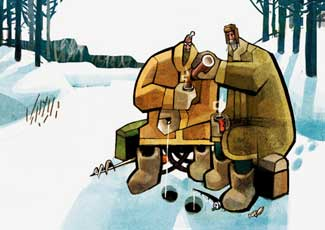
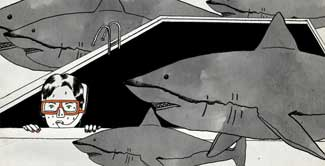
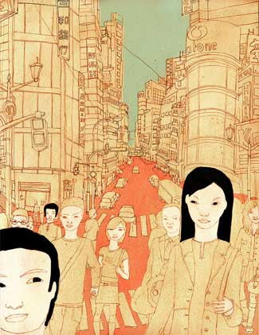
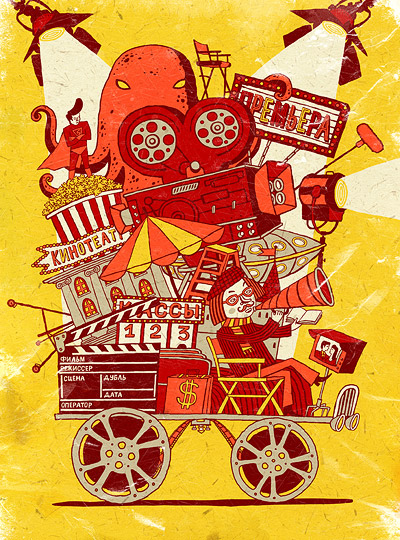
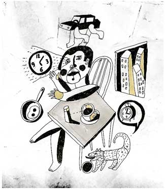
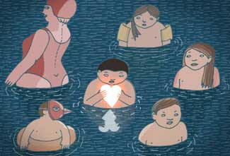

ИМЕТЬ ИЛИ НЕ ИМЕТЬ?
От Ирины Троицкой
Сразу оговорюсь, что мой личный опыт по части получения профобразования нельзя назвать удачным. Но показательным можно, я наводила справки. В подавляющем количестве художественных заведений в нашей стране (про другие не скажу — не знаю) происходит то же самое.

Я — дипломированный специалист. Я прекрасно умею рисовать натюрморты. И портреты тоже могу. Маслом, на холсте, в профиль, фас и три четверти. Не так хорошо, как натюрморты, но все-таки. Только кого этим сегодня удивишь? Дело в том, что никакого собственного стиля за годы, проведенные в университете, у меня не появилось. Мы рисовали то, что нужно по программе, а не то, что хотелось.

Я не против рисования глиняных горшков и гипсовых статуй, понимаю, дело нужное. Но заниматься только этим пять лет подряд! Помню, что после получения диплома хотелось лишь одного — выкинуть подальше краски и кисточки и забыть о том, что я умею рисовать. Я уж не говорю о том, чтобы делать это на заказ — не было желания рисовать даже для себя. То есть всех мутило от одной только мысли. Нужно было как-то выкручиваться. И тогда одна моя подруга пошла работать продавцом в мебельный магазин, другая — секретарем в деканат, третья — подбирать по цвету эмаль для покраски битых авто, а я устроилась работать тележурналистом. Спорить не буду, профессии творческие, да только совсем не про рисование.

Что стало с и без того немногочисленными молодыми людьми — не знаю. Дело в том, что на факультете все сильно пили. И пьют, не сомневаюсь, до сих пор. Когда однажды на уроке рисунка преподаватель, дыша в ухо перегаром, сообщил: «Смотрите, рисуем одну глазницу, вторую, а потом третью…», как-то сразу стало ясно, что многого ждать не следует. И может быть даже пора дать отсюда деру, пока не стало совсем уж поздно. Некоторые, кстати, так и сделали.

Короче говоря, если кто-то в конечном итоге и продолжил рисовать, то это, скорее, не «благодаря», а «вопреки». Лично я смогла взять в руки карандаш только через четыре года после окончания университета. И мой случай — не единичный.

Признаться, время от времени я завидую своим необразованным коллегам. Потому что, имея это самое образование, начинаешь думать, что, быть может, без него тебе было бы лучше. Но надо понимать, что это всего лишь пораженческие мысли из серии «хорошо там, где нас нет». И я знаю, что тем, у кого нет образования, время от времени кажется, что как раз его-то им и не хватает.

Во всей Москве на сегодняшний день есть только два места, куда я бы хотела пойти учиться. В одном из них, так уж вышло, я преподаю. Конечно, про горшки и статуи мне тоже иногда приходится рассказывать. Просто даже в такие моменты я помню, что умение правильно нарисовать горшок — это еще не признак настоящего иллюстратора.
Ирина Троицкая, специальный гость колонки